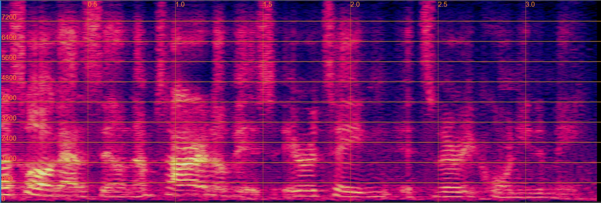
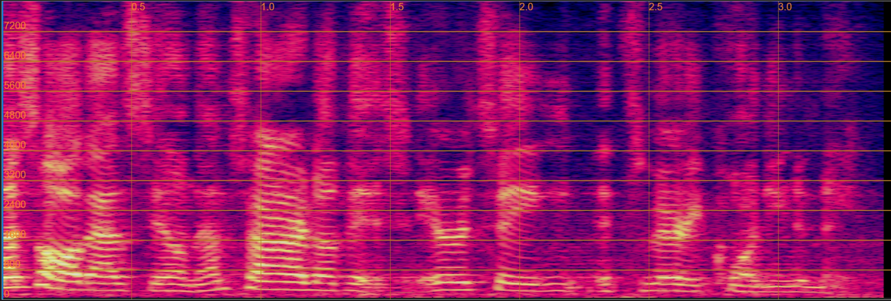
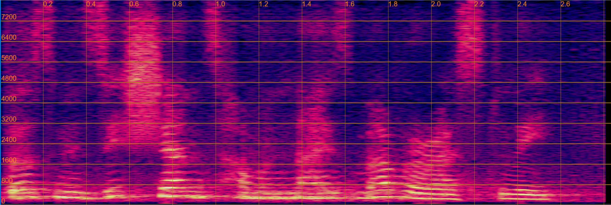
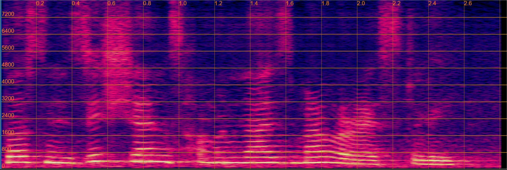

Our framework employs ProgRE as the pre-trained model, enabling stable voice conversion while preserving the original emotional state.
| 24-layer Pre-trained Model Under Our Framework | Baseline methods | |||||||||
|---|---|---|---|---|---|---|---|---|---|---|
| Source Speech | Target Speaker | ProgRE | Data2vec | HuBERT | Wav2vec2.0 | WavLM | Whisper | ConsistencyVC | Wav2vec-VC | |
| same emotion between source and target |
||||||||||
| different emotion between source and target |
||||||||||
Our framework employs ProgRE as the pre-trained model, enabling stable global emotion state conversion while preserving the original speaker identification.
Please note that our definition of emotional state is at the utterance level and does not affect speech duration. Instead, it is primarily reflected in stress and pitch variations.
| 24-layer Pre-trained Model Under Our Framework | Baseline methods | |||||||||
|---|---|---|---|---|---|---|---|---|---|---|
| Source Speech | Target Emotion | ProgRE | Data2vec | HuBERT | Wav2vec2.0 | WavLM | Whisper | ConsistencyVC | Wav2vec-VC | |
| same speaker between source and target |
||||||||||
| different speaker between source and target |
||||||||||
Our framework enables simultaneous conversion of emotion and speaker, with the emotion and speaker originating from different speech samples.
| 24-layer Pre-trained Model Under Our Framework | Baseline methods | ||||||||||
|---|---|---|---|---|---|---|---|---|---|---|---|
| Source Speech | Target Emotion | Target Speaker | ProgRE | Data2vec | HuBERT | Wav2vec2.0 | WavLM | Whisper | ConsistencyVC | Wav2vec-VC | |
| same target of emotion and speaker |
|||||||||||
| different target of emotion and speaker |
can't control emotion and speaker from different speech
Emotion Target
Speaker Target
|
||||||||||
Our framework reliably reconstructs high-quality speech based on intermediate representations. This allows for the integration of vector quantization to encode the content and the Transformer encoder's input, both of which are frame-level representations, enabling controllable speech synthesis.
| 24-layer Pre-trained Model Under Our Framework | Baseline methods | |||||||
|---|---|---|---|---|---|---|---|---|
| Source Speech | ProgRE | Data2vec | HuBERT | Wav2vec2.0 | WavLM | Whisper | ConsistencyVC | Wav2vec-VC |
Despite the improvements in speech quality, the randomness and artifacts introduced during inference reduce the accuracy of speech recognition models. We believe this reflects a limitation of the evaluation method rather than a flaw in the generation process.
| without Flow Predictor | with Flow Predictor |
|---|---|
|  lab: THAT IS ALL I GOT TO SAY ON THAT I AM TIRED OF IT IT IS IRRITATING IT IS VERY CORNY TO ME rec: THAT IS ALL I GOT TO SAY ON THAT I AM TIRED OF IT IT IS IRRITATING IT IS VERY CORNY TO ME WER by Whisper Large V3: 0.0% |
 lab: THAT IS ALL I GOT TO SAY ON THAT I AM TIRED OF IT IT IS IRRITATING IT IS VERY CORNY TO ME rec: THAT IS ALL THAT IS ON I AM TIRED OF IT IT IS IRRITATING IT IS VERY CORNY TO ME WER by Whisper Large V3: 21.74 % |
| without Flow Predictor | with Flow Predictor |
|---|---|
|  lab: THOSE MUSICIANS HARMONIZE MARVELOUSLY rec: THOSE MUSICIANS HARMONIZE MARVELOUSLY WER by Whisper Large V3: 0.0% |
 lab: THOSE MUSICIANS HARMONIZE MARVELOUSLY rec: THOSE MUSICIANS HARMONIZE MERRILY WER by Whisper Large V3: 25.0% |